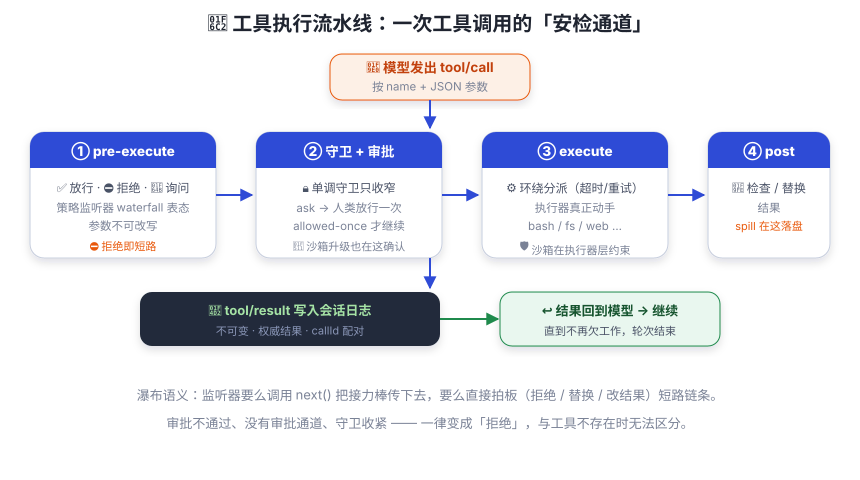

工具与执行流水线
工具是模型的手。每次动手都要过「安检通道」：审批、守卫、溢出处理 —— 一个不少。
模型想读文件，但它不知道你的文件系统长什么样。于是 dsh 给它两样东西：一张说明书（ToolSchema）：工具叫什么、干什么用、参数怎么填——模型照着说明书「点菜」；一双干活的手（execute 函数）：真正去读文件、跑命令——由 dsh 的插件实现。
关键原则：说明书会给模型看，手永远在框架这边。你见过让顾客自己进厨房炒菜的吗？模型也一样——它能点菜（调用工具），但锅铲（执行）绝不递到它手里。
一个工具长什么样？
插件作者用 defineTool 这个类型化助手来定义工具 ——
它帮你校验参数、推导返回值类型，写起来很舒服。这是官方 README 里的 read_file 例子
（出处：packages/core/tools/README.md）：
ctx.tools.register(defineTool({
name: 'read_file',
description: 'Read a file from disk.',
parameters: {
path: { type: 'string', required: true, description: 'Absolute file path' },
offset: { type: 'number' },
limit: { type: 'number' },
},
output: {
schema: { type: 'string' },
render: (_args, value) => [{ type: 'text', text: value }],
},
async execute(args, exec) {
return readFile(args.path, { encoding: 'utf8', signal: exec.signal })
},
}))
注意：注册表暴露给模型的只有 name / description / parameters；
execute、output、超时等执行细节绝不会泄漏到模型请求里。
参数不匹配会抛 INVALID_ARGS，输出不符合声明会抛 INVALID_TOOL_OUTPUT —— 错得明明白白。
执行流水线：安检通道

| 环节 | 谁参与 | 干什么 |
|---|---|---|
tools/pre-execute | 策略监听器 | 瀑布式表态：allow（放行）/ deny（拒绝）/ ask（询问）。参数不可改写（历史、审计、UI、执行必须一致）。 |
| 单调守卫（guard） | 注册的守卫 | 只能收窄权限，后续监听器无法撤销 —— 一票否决终审。 |
tools/execute | 环绕包装层 | 真正执行。超时、重试、指标插件在这里包装；只有它有权替换执行信号。 |
tools/post-execute | 检查监听器 | 检查 / 替换结果：accept（改内容或值）或 block（转 isError + 纠正反馈）。 |
finalizeContent | 工具定义本身 | 定义自有的最后一道同步内容变换，恰好调用一次。 |
tools/result | 只读观测 | 冻结的权威结果，写日志，供 UI 等消费。 |
审批（approval）：门卫在哪里？
pre-execute 里监听器表态 ask 后，会走 ctx.approval
这个 seam 做一次性询问：只有 allowed-once 才继续执行；
未授权、没有审批通道或没有 agent 的请求一律变成拒绝。
审批策略是 ask（默认，问人）或 never（确定性拒绝，比如 headless 场景）。
沙箱权限升级（比如要跑更宽权限的命令）也是在这里先获得一次性批准。
spill：结果太大放不进对话
工具输出特别大时（比如整个文件），dsh-spill-policy 在 post-execute 里介入：
完整文本存入 ctx.spillStore，模型只看到「有界首尾预览 + 存放位置 + 取回指引」，
需要时可以再读。就像仓库放不下时先入冷库，只给一张索引卡。
沙箱在哪介入？
在执行器层：bash-sandbox 在真正 spawn 进程时按策略包装 argv、限制文件效果。
它是「执行事实」的约束者，不是流水线里的策略节点 —— 所以审计日志看到的
tool/result 是执行后的真实结果。
内置工具速览
| 工具 | 一句话 |
|---|---|
bash / pwsh | 执行 shell 命令（每次全新进程） |
read / read_image / write / edit | 行号分页读文件、读图、写文件、字面量编辑（默认先读后写策略） |
glob / grep | ripgrep 驱动的文件发现与内容搜索 |
terminal_open / send / read / … | 持久 PTY 终端会话 |
web_search / web_fetch | 网页搜索与抓取 |
ask_user_question | 向人类提问，暂停调用直到回答 |
todo_write | 任务清单，UI 渲染为 checklist |
subagent / subagent_fork 等 | 委派子代理（第 10 章） |
workflow / ralph | 多阶段编排脚本 / 每轮全新子代理循环 |
skill | 加载技能指令（SOP） |
job_kill / job_list / job_output | 通用后台任务控制 |
create_goal / get_goal / update_goal | 持久目标管理 |
想让某个工具在特定 agent 下不可见？用 restriction（第 09 章）。
想在执行前后加策略？监听 tools/* 事件。参数一致性是硬约束：
任何监听器都不能改写参数 —— 历史、审计、UI 与执行必须看到同一个调用。